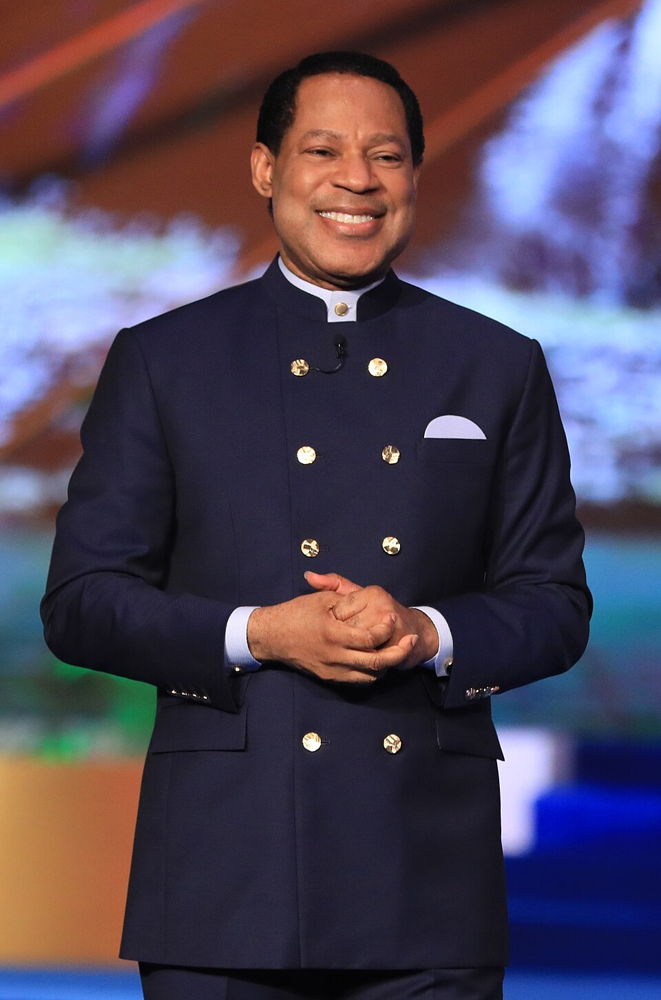
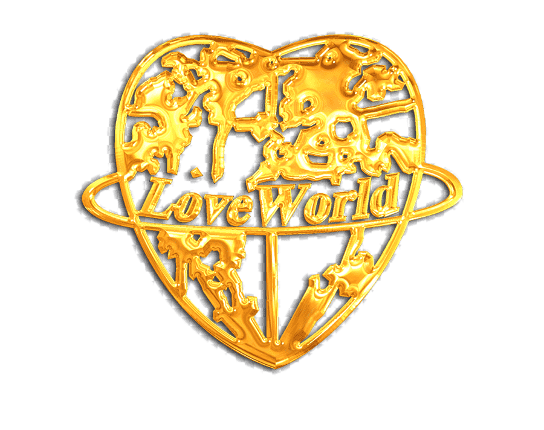

Uma família da fé, no coração de Moçambique
Christ Embassy Moçambique faz parte da família mundial Christ Embassy, presente em dezenas de países. Aqui em Maputo, vivemos essa mesma visão em português, com o coração virado para Moçambique e toda a comunidade lusófona (PALOP).

Conheça o Pastor Chris
O Rev. Dr. Chris Oyakhilome (D.Sc., D.D.) é o Presidente da LoveWorld Inc. e da Christ Embassy. Enviado por Deus e movido por uma unção singular, a sua liderança tem impulsionado, há mais de 30 anos, um ministério global, dinâmico e multifacetado.
Como pastor, professor, ministro de cura, apresentador de televisão e autor best-seller, o Pastor Chris dedica-se diariamente a alcançar os povos do mundo com a presença manifesta de Deus.
Visão, Missão e Propósito
Partilhamos a mesma visão de todas as igrejas Christ Embassy no mundo — vivida com o coração, a língua e a cultura de Moçambique.
Levar a presença de Deus às nações
Levar a presença divina de Deus às nações e aos povos do mundo; e demonstrar o caráter do Espírito.
Levantar uma geração de herdeiros
Levantar gerações de homens e mulheres que receberão a sua herança para concretizar o sonho de Deus.
Conduzir à herança em Cristo
Para trazer homens e mulheres à sua herança em Cristo.

Avenida de Angola, Maputo
Realizamos os nossos cultos presenciais na Av. de Angola, Nº 1818/1824, em Maputo, com transmissão online para membros e visitantes em todo o Moçambique e na diáspora lusófona. O nosso objetivo é, progressivamente, apoiar a abertura de novas células e pontos de encontro pelo país.
LiderançaSob a liderança do Pastor Kene Ume
Desde 2014, a Christ Embassy Moçambique é liderada localmente pelo Pastor Kenechukwu Ume ("Pastor Kene Ume"), dedicado à plantação de igrejas, formação de líderes e ao desenvolvimento de células e ações de evangelismo — sob a cobertura apostólica do Rev. Dr. Chris Oyakhilome, fundador da Christ Embassy / LoveWorld.
Sobre a LoveWorld
A LoveWorld Incorporated (também conhecida como Christ Embassy) é um ministério global com a missão de levar a presença de Deus às nações e refletir o caráter do Espírito Santo, através de todos os meios disponíveis.
Ao longo dos anos, o ministério deu origem a vários braços de atuação: um ministério televisivo e digital de grande alcance, a Escola de Cura, o devocional diário Rhapsody of Realities, e a Missão Intercidades, que acolhe crianças em situação vulnerável, oferecendo alimentação, habitação, educação e a oportunidade de viver os seus sonhos. Esta visão global deu origem a uma rede de centenas de igrejas e comunidades em todos os continentes — da qual a Christ Embassy Moçambique orgulhosamente faz parte.

Declaração de Fé
A nossa fé assenta na Palavra de Deus e está alinhada com os princípios fundamentais da doutrina cristã, partilhados por toda a família Christ Embassy / LoveWorld.
A Palavra de Deus
Cremos que a Bíblia é a Palavra inspirada e infalível de Deus.
A Trindade
Cremos num só Deus, eternamente existente em três pessoas: Pai, Filho e Espírito Santo.
A Divindade de Cristo
Cremos que Jesus nasceu de uma virgem, morreu, ressuscitou corporalmente e ascendeu aos céus.
Salvação
Cremos que a salvação vem pelo arrependimento e pela fé no sangue precioso de Jesus.
Cura Divina
Cremos que a obra redentora de Cristo na cruz proporciona cura divina para o corpo e salvação para a alma.
A Volta de Cristo
Cremos no arrebatamento da igreja e na segunda vinda de Cristo.